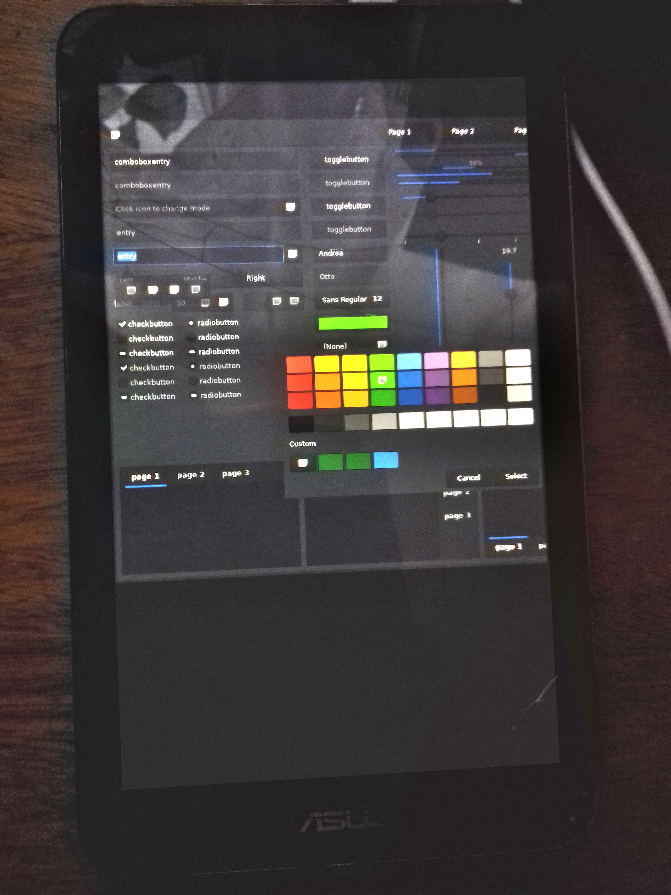

ASUS MeMO Pad 7 (asus-me176c)
|
 asus-me176cx running postmarketOS | |
| Manufacturer | ASUS |
|---|---|
| Name | MeMO Pad 7 (ME176C(X)) |
| Codename | asus-me176c |
| Released | 2014 |
| Category | community |
| Original software | Android |
| Original version | 4.4 KitKat |
| Extended version | 5.0 Lollipop + UEFI |
| postmarketOS kernel | linux-edge (Alpine) |
| Hardware | |
| Chipset | Intel Bay Trail T Z3745 |
| CPU | Intel® Atom™ CPU Z3745 @ 1.33GHz (Quad-Core) |
| GPU | Atom Processor Z36xxx/Z37xxx Series Graphics & Display |
| Display | 7" 800x1280 IPS LCD |
| Storage | 8/16 GB |
| Memory | 1 GB |
| Architecture | x86_64 |
| Type | tablet |
| Unixbench Whet/Dhry score | 1664.4 |
{kind=link}
| USB Networking |
Works
|
|---|---|
| Flashing |
Works
|
| Touchscreen |
Works
|
| Display |
Works
|
| WiFi |
Works
|
| FDE |
Works
|
| Mainline |
Works
|
| Battery |
Works
|
| 3D Acceleration |
Works
|
| Audio |
Works
|
| Bluetooth |
Partial
|
| Camera |
Broken
|
| GPS |
Broken
|
| Mobile data |
Unavailable
|
| SMS |
Unavailable
|
| Calls |
Unavailable
|
| USB OTG |
Works
|
| NFC |
Unavailable
|
| Accelerometer |
Works
|
|---|---|
| Magnetometer |
Works
|
| Ambient Light |
Unavailable
|
| Proximity |
Unavailable
|
| Hall Effect |
Works
|
| Barometer |
Unavailable
|
| Power Sensor |
Unavailable
|
| Camera Flash | |
|---|---|
| Keyboard |
Unavailable
|
| Touchpad |
Unavailable
|
| USB-A |
Unavailable
|
| HDMI/DP |
Unavailable
|
| Ir TX |
Unavailable
|
| Ir RX | |
| Stylus | |
| Haptics | |
| Ethernet | |
| FOSS bootloader |
Works
|
Contributors
Users owning this device
Installation
Preparation
The device has a locked Android bootloader. To boot other operating systems, you need to replace the bootloader entirely with a custom one.
- Make sure that you are running Android 5.0 (Lollipop) - older versions did not have UEFI firmware.
- Install me176c-boot.
- Set up the
APDpartition as additional ESP (EFI System Partition), see me176c-boot - Setting up an additional ESP partition.
Pre-built image
Download 2 files, as explained in installation#download.
-
<date>-...-asus-me176c-bootpart.img.xz(boot partition) -
<date>-...-asus-me176c.img.xz(rootfs)
Unpack them using unxz *.xz.
pmbootstrap
Follow the pmbootstrap article to create your own postmarketOS image until you ran pmbootstrap install. Then use pmbootstrap export to get the same files as in the pre-built images section.
Flashing boot partition
The bootloader cannot boot directly from a SD card, therefore the boot partition must be always on internal storage.
Boot into Fastboot mode, and use fastboot flash APD asus-me176c-bootpart.img (or pmbootstrap flasher flash_kernel with pmbootstrap) to flash the boot partition. Then you need to create a boot entry for postmarketOS. Create a file pmos.conf:
title postmarketOS volume 80868086-8086-8086-8086-000000000007 linux /vmlinuz-edge initrd /intel-ucode.img initrd /initramfs # Comment this out to get more output on screen while booting options console=null
Note: the filenames in pmos.conf must match those in asus-me176c-bootpart.img, else expect boot hang with failed to open file: or similar console messages. In that case, inspect bootpart.img directly or examine APD contents after flashing.
To install the new boot entry, boot into TWRP recovery, mount the ESP partition, and push the new configuration using ADB: adb push pmos.conf /esp/loader/entries/
Now you can choose if you would like to install the root partition (asus-me176c(-root).img) on internal storage or a SD card.
Internal Storage
Normally you should be also able to flash the rootfs using Fastboot:
- System partition:
fastboot flash system asus-me176c.img(pmbootstrap flasher flash_rootfs) - Data partition (larger):
fastboot flash data asus-me176c.img(pmbootstrap flasher flash_rootfs --partition=data)
However, if you get an error you may need to flash it using dd via the TWRP recovery instead:
$ gzip -c ...-asus-me176c.img | adb shell "zcat | dd of=/dev/block/by-name/data bs=4m"
It looks like Fastboot can only handle small partitions on this tablet, so the error occurs whenever the image becomes too large for Fastboot to handle. Check via fastboot getvar max-download-size (see also flash_fastboot_max_size). On a 16GB device the value is ~512MiB.
Note that on first boot the resizing of the partition containing the rootfs may fail quietly (or not occur at all?). Check the resulting filesystem(s) and partition(s) with df and sudo fdisk -l. If necessary, boot to recovery, unmount the filesystem, and use resize2fs on the partition.
SD card
Write the root partition image to a partition on your SD card:
- Find the correct block device $ lsblk (usually
/dev/mmcblkXpYbut sometimes/dev/sdXY) - Write the image to the partition (Warning: Existing data will be erased):
dd if=asus-me176c-root.img of=/dev/mmcblkXpY bs=4M - Check resulting rootfs filesize
resize2fs -P /dev/mmcblkXpYand useresize2fsto make better use of the partition.
ZRAM
Since the tablet has very little RAM, some applications might hang or crash easily. This affects web browsers (e.g. Firefox) in particular. Consider enabling ZRAM to improve the situation somewhat.
NOTE: On edge (but not v22.12) ZRAM is set up automatically. No changes are necessary.
Hardware status
Bluetooth
On recent Linux versions there seem to be problems with Bluetooth. It works only after some reboots or not at all, with randomly changing errors such as
[ 9.600344] Bluetooth: hci0: BCM: features 0x0f [ 9.601428] Bluetooth: hci0: BCM2076B1 [ 9.601437] Bluetooth: hci0: BCM2076B1 (002.002.004) build 0000 [ 9.602648] Bluetooth: hci0: BCM2076B1 'brcm/BCM2076B1.hcd' Patch [ 9.659576] Bluetooth: hci0: Frame reassembly failed (-84) [ 11.711297] Bluetooth: hci0: command 0xfc4c tx timeout [ 19.967859] Bluetooth: hci0: BCM: Patch command fc4c failed (-110) [ 19.967888] Bluetooth: hci0: BCM: Patch failed (-110) [ 22.015081] Bluetooth: hci0: command 0xfc45 tx timeout [ 30.206722] Bluetooth: hci0: BCM: failed to write clock (-110) [ 32.255720] Bluetooth: hci0: command 0x0c03 tx timeout [ 40.446793] Bluetooth: hci0: BCM: Reset failed (-110)
The cause for this regression is currently unknown. It seems like Linux receives garbage data from the Bluetooth chip. :(
hwtest result
| Category | Model | Path | Status | Value |
|---|---|---|---|---|
| framebuffer | i915drmfb | /sys/class/graphics/fb0 | Working | |
| drm | /sys/class/drm/card0-HDMI-A-1 | Working | Not connected | |
| drm | /sys/class/drm/card0-DSI-1 | Working | 800x1280 | |
| drm | /sys/class/drm/card0-DP-1 | Working | Not connected | |
| magnetometer | i2c-AKM9911:00 | /sys/bus/iio/devices/iio:device0 | Working | -0.1, -0.12, 0.31 gauss |
| accelerometer | i2c-KXJ2109:00 | /sys/bus/iio/devices/iio:device1 | Working | 0.4, -4.58, -8.6 g |
| input | Video Bus | /dev/input/event5 | Working | |
| input | bytcr-rt5640 Headset | /dev/input/event4 | Working | |
| input | Goodix Capacitive TouchScreen | /dev/input/event3 | Working | |
| input | gpio-keys | /dev/input/event2 | Working | |
| input | gpio-keys | /dev/input/event1 | Working | |
| input | ASUS Lid Cover | /dev/input/event0 | Working |
Some users have reported being able to charge the device and connect a USB-Hub using a Micro USB OTG Y-cable like this one. It is a cable with an integrated resistor, which manages the splitting. This enables using the tablet with a keyboard, mouse, mass-storage-device,and whatever you can think of using USB. The USB protocol is USB 2.0. (The CPU also supports USB3 but the interface is sadly not exposed.)
Software issues
Phosh tweaks / gotchas
- Unlock button is not accessible for lockscreen rewake in landscape mode with large display scales (150%, 175%). Power cycle seems to be required.
- Auto-rotate lockscreen orientation is fixed at locking.
Tested DE
PHOSH
...WIP...
SXMO
Thanx to it's minimalistic approach SXMO works pretty well on the me176c. It requires some practice to use it so read the docs :) !
But... this does not resolve memory-hungry issues like internet browsing with firefox or chromium. You have to be kind with the hardware: 1 GB RAM can't do much UI-/visual-stuff !
As of SXMO 1.12.0 there is no device profile. Here is where the work is needed to have a user-friendly SXMO on me176c(x).
This is how the deviceprofile of the pinephone 1.2 looks like
~$ cat /usr/bin/sxmo_deviceprofile_pine64,pinephone-1.2.sh
#!/bin/sh
# SPDX-License-Identifier: AGPL-3.0-only
# Copyright 2022 Sxmo Contributors
export SXMO_WIFI_MODULE=8723cs
export SXMO_SYS_FILES="/sys/module/$SXMO_WIFI_MODULE/parameters/rtw_scan_interval_thr /sys/power/state /sys/devices/platform/soc/1f00000.rtc/power/wakeup /sys/power/mem_sleep /dev/rtc0 /sys/devices/platform/soc/1f03400.rsb/sunxi-rsb-3a3/axp221-pek/power/wakeup"
export SXMO_TOUCHSCREEN_ID=8
export SXMO_MONITOR="DSI-1"
export SXMO_ALSA_CONTROL_NAME=PinePhone
export SXMO_SWAY_SCALE="2"
and for the Xiaomi Poco F1 (xiaomi-beryllium):
~$ cat /usr/bin/sxmo_deviceprofile_xiaomi,beryllium.sh
#!/bin/sh
# poco f1
# SPDX-License-Identifier: AGPL-3.0-only
# Copyright 2022 Sxmo Contributors
export SXMO_DISABLE_LEDS="1"
export SXMO_MONITOR="0:0:Novatek_NT36XXX_Touchscreen"
export SXMO_POWER_BUTTON="0:0:pm8941_pwrkey"
export SXMO_VOLUME_BUTTON="1:1:gpio-keys 0:0:pm8941_resin"
export SXMO_SWAY_SCALE="2"
export SXMO_VIBRATE_DEV="/dev/input/by-path/platform-c440000.spmi-platform-c440000.spmi:pmic@3:haptics@c000-event"
All other device profiles are under the same directory /usr/bin/sxmo_deviceprofile_*.
Another very important SXMO-env_variables is:
SXMO_DEVICE_NAME=pine64,pinephone-1.2
See also
- Linux on ASUS MeMO Pad 7 (ME176C(X))
- Arch Linux on ASUS MeMO Pad 7 (ME176C(X))
- LineageOS 16.0 (Android) ROM (uses the same kernel)
- Unsupported features: GPS, Camera